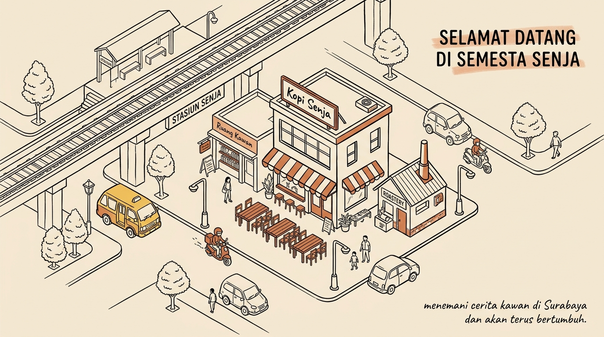
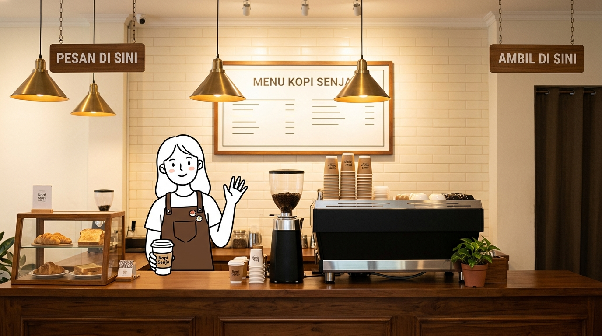

Tentang Kopi Senja
Lahir dari kehangatan senja di Surabaya, hadir untuk menemani setiap cerita dan langkah kawan yang singgah.

Berawal dari Sudut Teduh di Surabaya
Di tengah dinamika kota Surabaya yang sibuk dan berenergi tinggi, kami menyadari ada satu momen berharga yang kerap dinantikan banyak orang: saat matahari mulai condong ke barat dan langit perlahan berubah jingga.
Bagi kami, waktu senja adalah jeda. Waktu bagi para mahasiswa, pekerja, hingga perantau untuk menghela napas, meletakkan beban hari ini, dan menikmati secangkir kehangatan sebelum kembali melangkah pulang.
Kopi Senja didirikan dengan komitmen sederhana: menghadirkan seduhan kopi nusantara yang jujur, bermutu baik, serta ramah di kantong, di dalam ruang yang membuat siapa saja merasa disambut.
3 Pilar Nilai Kopi Senja
Seperti halnya secangkir kopi yang butuh keseimbangan rasa, langkah kami bertumpu pada tiga komitmen utama:
Seduhan Jujur Nusantara
Biji kopi kami dipasok langsung dari petani lokal Jawa Timur dan penjuru nusantara. Diracik dengan gula aren murni tanpa sirup sintetis yang berlebihan.
Ruang Singgah yang Teduh
Bukan sekadar kedai transaksi cepat. Kami merawat suasana tenang dengan alunan musik lembut, sudut baca, dan stopkontak untuk teman belajar atau bekerja.
Sapa, Senyum, Seduh
Pelayanan hangat layaknya menerima sahabat di teras rumah. Setiap cangkir disajikan dengan senyum tulus dan keramahan khas warga Jawa Timur.
Mengapa Kami Memanggilmu “Kawan Senja”?

Di kedai kami, pengunjung bukan sekadar deretan angka di nota pemesanan atau pembeli yang lewat sepintas. Kami memilih menyapa setiap insan yang datang sebagai Kawan Senja.
Karena bagi kami, setiap cangkir yang diseduh membawa pertemuan baru. Ada kawan yang datang mencari ketenangan setelah hari yang panjang, ada yang merajut ide bersama teman kuliah, dan ada yang sekadar ingin berbincang santai dengan barista kami di meja seduh.
Semangat persaudaraan dan keterbukaan inilah yang menjaga denyut hangat Kopi Senja hingga hari ini.
Jejak Langkah Kami
Perjalanan sederhana yang terus bertumbuh bersama kehangatan para Kawan Senja:
Seduhan Pertama di Surabaya
Membuka gerai mungil dengan tiga meja kayu sederhana di sudut Surabaya, menyajikan kopi tubruk klasik dan es kopi susu gula aren buatan rumahan.
Lahirnya Racikan Ikonik
Memperkenalkan menu andalan Kopi Susu Senja Aren dan kreasi segar Senja Cloud Pandan yang langsung menjadi favorit kawan-kawan sekitar.
Ruang Kolaborasi & Komunitas
Menghadirkan rak buku mini dan sudut bincang santai untuk ruang berkumpul komunitas kreatif, pegiat literasi, dan diskusi mahasiswa.
Layanan Mandiri & Kopi Senja Digital
Mengembangkan katalog menu dan sistem pesanan mandiri berbasis web yang responsif, memudahkan kawan memesan tanpa kehilangan sentuhan personal barista.
Asal Usul Biji Kopi Lokal Nusantara
Sebagai bentuk pertanggungjawaban dan kejujuran rasa kepada para Kawan Senja, berikut adalah rincian pasokan biji kopi lokal yang kami kurasi langsung dari kebun petani Jawa Timur:
| Nama Biji Kopi | Daerah / Petani | Ketinggian | Metode Olah | Karakter Rasa (Notes) |
|---|---|---|---|---|
| Ijen Sweet Bourbon | Bondowoso, Jawa Timur | 1.400 mdpl | Honey Process | Gula Merah, Apel Hijau, Karamel |
| Malang Dampit Robusta | Lereng Semeru, Dampit | 800 mdpl | Natural Wash | Cokelat Pekat, Kacang Panggang, Bold |
| Argopuro Blue Mountain | Pegunungan Argopuro | 1.300 mdpl | Wet Hulled | Jeruk Purut, Teh Hitam, Rempah Lembut |
| Arjuno Micro-Lot | Lereng Gn. Arjuno, Prigen | 1.250 mdpl | Anaerobic Natural | Ceri Matang, Cokelat Susu, Madu Hutan |
* Seluruh biji kopi disangrai (roasting) segar setiap hari Selasa dan Jumat di Dapur Roastery Kopi Senja Surabaya.
Pintu Kami Selalu Terbuka
Secangkir kopi hangat dan obrolan bersahaja telah menantimu di Surabaya.